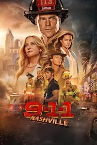
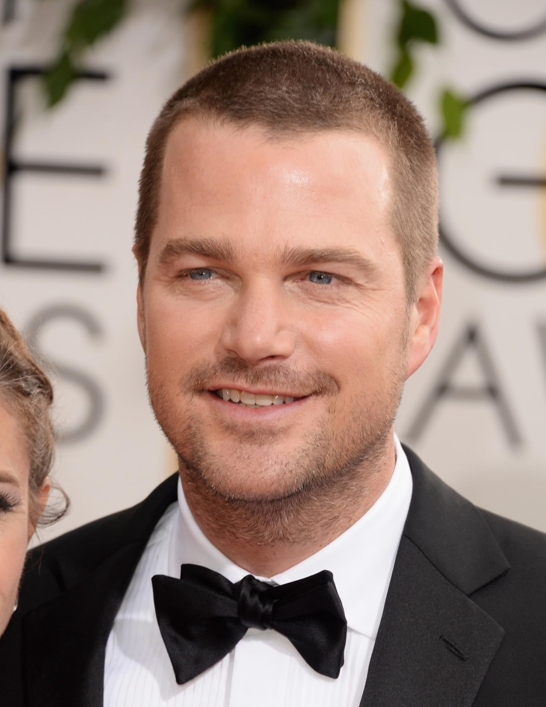
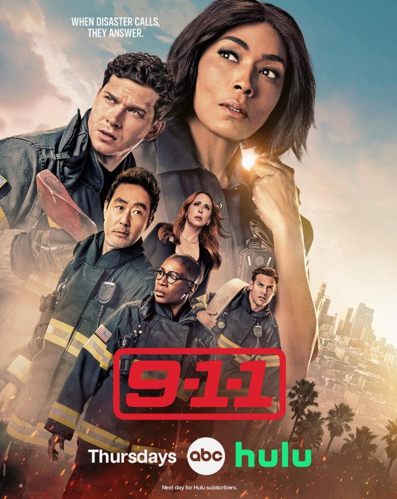
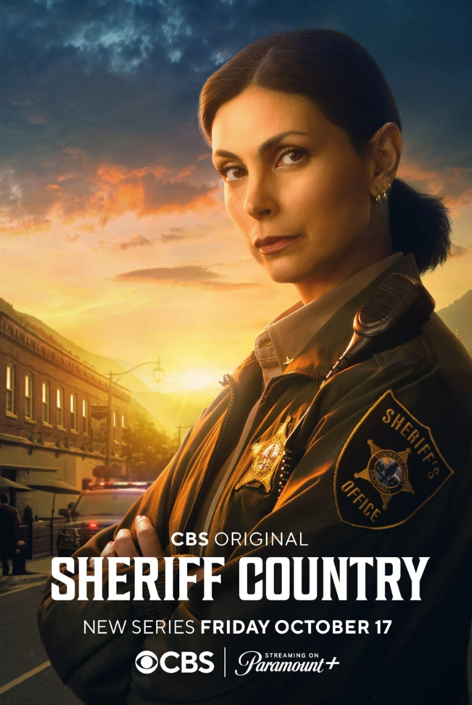
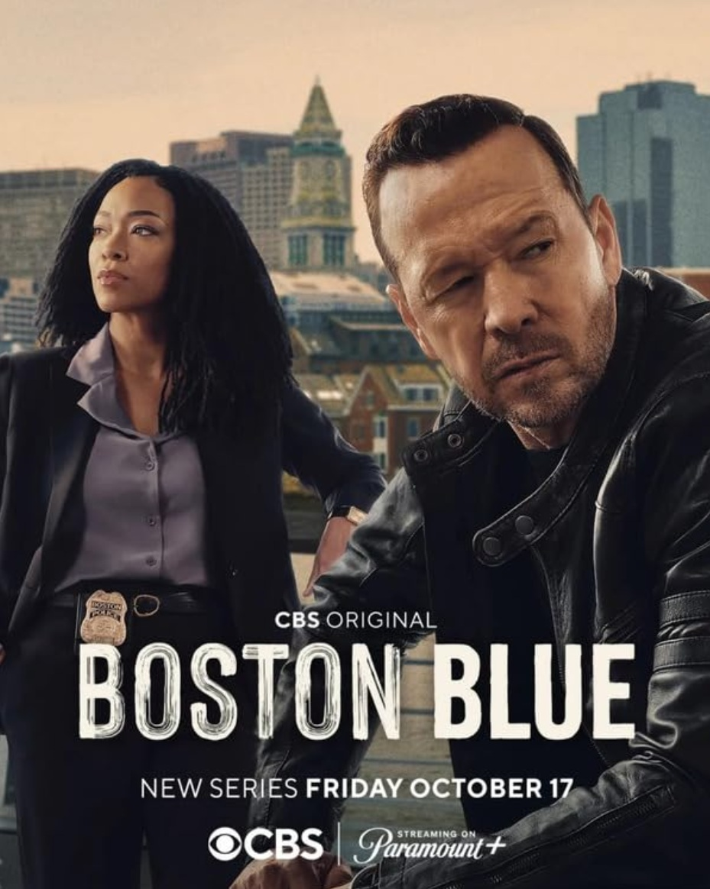
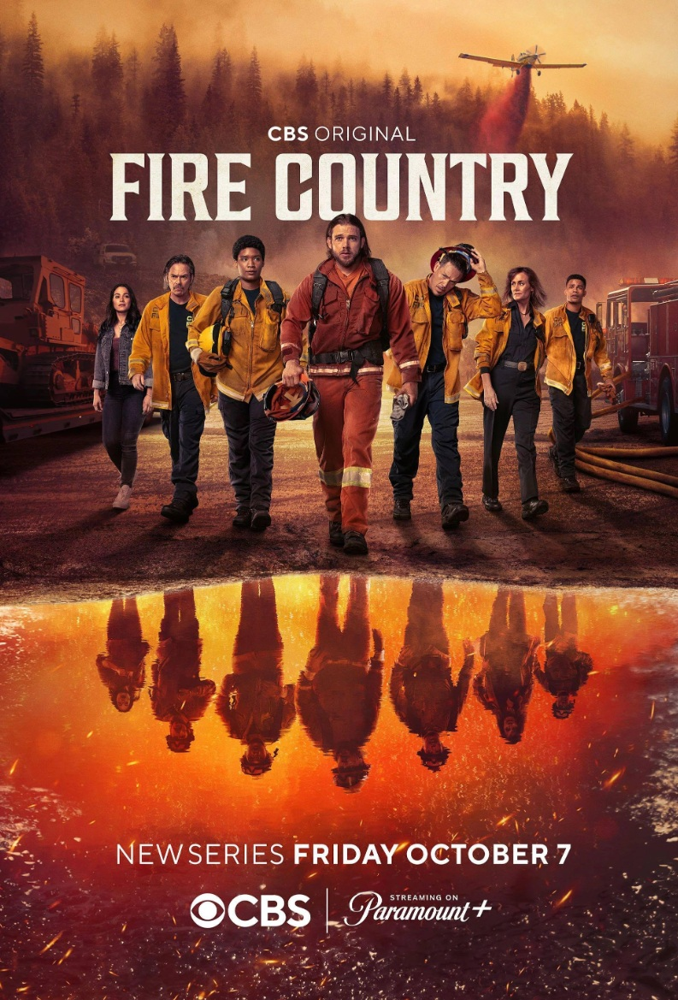

PROYECTO SALVACIÓN
En Tennessee, los servicios de emergencia equilibran sus arriesgadas carreras con el drama de una poderosa
dinastía local, donde sus vidas personales y deberes profesionales chocan.
- Género: Aventura
- Año: 2025
- Duración: 1 TEMPORADA
- Director: John J. Gray, Chad Lowe
- Productores/as: Angela Bassett, Jim Garvey
- Calificación general: 8.2/10
- Clasificación por edad: +13
- Plataformas: Disney+
Tráiler
REPARTO

CHRIS O'DONNELL
JESSICA CAPSHAW
KIMBERLY WILLIAMS-PAISLEY
MICHAEL PROVOST
LEANN RIMES
RESEÑAS DESTACADAS
Calificación: 5.0 / 10
PJKING-90930 dice:
¿De verdad?
“Acabo de empezar a ver el episodio 1 de la temporada 1. Espero que mejore.
Hasta ahora las tramas son aún más descabelladas que las otras series del 11-S, que disfruté,
al menos las otras tenían personajes agradables. Me pregunto si los bomberos realmente pueden
contratar a alguien que no haya ido a la academia para formación en el puesto de trabajo hasta
que se abra una plaza. Me cuesta mucho imaginarlo. Como dije antes, espero que esto mejore.”
3 comentarios
Calificación: 4.0 / 10
blanco-cristal1974 dice:
Uf. Los actores solo te llevan hasta cierto punto.
"Muy mala escritura. No es una buena trama hasta ahora debido a la mala escritura.
Me gustan estos actores, pero la dirección y el guion necesitan grandes mejoras si esta serie quiere
sobrevivir. Me encantaron las otras series del 911, original y solitaria. Esto no es ni de lejos tan
bueno hasta ahora. La escritura de la trama es muy mala hasta ahora. El original siempre ha sido bueno,
Lonestar me llevó uno o dos episodios, aunque me encantaba el reparto."
5 comentarios
Calificación: 4.0 / 10
gfarrell0 dice:
911 Nashville, un drama escrito como una parodia
""911 Nashville" es la última incorporación a la franquicia "911", pero le cuesta estar a la altura
de sus predecesoras. La serie se centra en una familia adinerada involucrada en rodeos y bomberos,
con una subtrama enrevesada que involucra a un hijo perdido hace mucho tiempo: stripper convertido
en bombero con un talento natural para el trabajo. Su madre, una aventura de una noche del pasado del
patriarca, trama extorsionar dinero a la familia, añadiendo drama innecesario. Una escena especialmente
absurda involucra a un rescate que salva vidas en la fiesta de cumpleaños de un niño. Una niña de 7 años
es arrastrada a 15 metros por el aire por una cometa que, inexplicablemente, se descontrola. El operador
ordena a los padres que se tomen de la mano, y milagrosamente la atrapan, un momento tan mal escrito
que resulta increíble. Comparado con "911 Austin", que en contraste parece Shakespeare, "911 Nashville"
sufre de una escritura pésima a pesar de un reparto decente. Como fan de la franquicia, estoy decepcionado
y puede que no siga viéndola a menos que se hagan mejoras significativas."
3 comentarios
Calificación: 1.0 / 10
Sam-1946 dice:
Tío..... Para.
"Permíteme empezar diciendo que me encantaron el 11-S y el 911 Lone Star. El 911 se volvió un poco loco al final,
pero bueno, a estas alturas, ya estoy en él. Pero esto. Ni siquiera puedo. La peor actuación
que he visto nunca. Trama salvaje, personajes salvajes. Estaba muy emocionado de que esto saliera
después de que terminara Lonestar y decir que estoy decepcionado es quedarse corto. Muy, muy decepcionante."
1 comentarios
Calificación: 7.0 / 10
RobBolson dice:
Ganando impulso.
"Me da risa que cualquiera se apresura a declarar cuánto le disgusta vehementemente esta serie después de solo
tres o cuatro episodios. Va ganando impulso a medida que los personajes se desarrollan. Me encantaría que
cualquiera que critique esta serie incluyera su drama televisivo favorito en sus comentarios. Puede que este
programa no gane ningún premio de la industria, pero está lejos de ser horrible ni lo peor de la televisión."
2 comentarios
RELACIONADOS

9-1-1
Calificación: 7.9/10
DURACION: 9 TEMPORADA

SHERIFF COUNTRY
Calificación: 6.7/10
DURACION: 1 TEMPORADA

BOSTON BLUE
Calificación: 6.2/10
DURACION: 1 TEMPORADA
